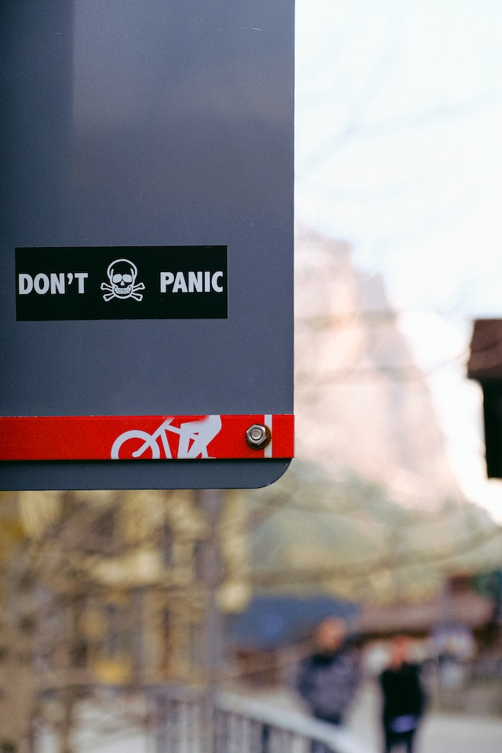

False Alarm, Rest Easy
October 1, 2023 By Raheed Gilzene

In the wake of the recent doomsday scare, the world breathed a collective sigh of relief as we narrowly avoided a catastrophic event. It's a time for celebration, reflection, and a renewed appreciation for the precious gift of life.
The experience of coming so close to the brink of destruction has left us with valuable lessons. Firstly, it has highlighted the importance of preparedness. While the threat turned out to be a false alarm this time, it reminds us that we should always be ready to face unexpected challenges. Emergency plans, community resilience, and individual preparedness should not be taken lightly. Secondly, the doomsday scare has shown us the power of unity. In the face of adversity, people from all walks of life came together to support one another. Neighbors checked on neighbors, strangers offered help, and communities rallied to ensure everyone's well-being. This spirit of solidarity is a reminder that, in times of crisis, our shared humanity shines brightly. Moreover, this incident underscores the significance of science and technology in our lives. The tireless efforts of astronomers, scientists, and researchers provided us with the accurate information needed to assess and mitigate the threat. It serves as a testament to the importance of continued investment in scientific discovery and innovation.
As we move forward from this near-miss, it's crucial to channel the sense of gratitude and resilience we've cultivated. It's an opportunity to cherish our loved ones, strengthen our communities, and strive for a better, more prepared future. In the grand scheme of things, the doomsday scare was a false alarm, but it served as a stark reminder of the fragility of our existence. Let's not forget the lessons we've learned and the bonds we've formed during this time. Instead, let's use them to build a world that's more resilient, compassionate, and prepared for whatever challenges the future may bring.
The End Of The World?
September 30, 2023 By Raheed Gilzene
In a world filled with uncertainty, it's not uncommon for our minds to wander into the realm of doomsday scenarios. From alien invasions to natural disasters, the idea of the end of the world has always captured our collective imagination. But what happens when that doomsday scenario feels like it's actually happening? That's precisely what we experienced recently, in a moment that left us questioning our very existence.
It all started when scientists detected an unusual celestial object hurtling towards Earth. Initial reports were alarming, with experts suggesting that this object had the potential to cause catastrophic damage on a global scale. Panic spread like wildfire across social media, and people began preparing for the worst. Store shelves emptied as individuals stockpiled supplies, and underground bunkers suddenly seemed like a reasonable investment. As the fateful day approached, people's anxiety levels soared. Families huddled together, saying their goodbyes, and contemplating their final moments. It was a surreal and deeply unsettling time for humanity. But then, something remarkable happened.
As the object drew closer to Earth, astronomers revised their calculations. The new data indicated that the object's trajectory had shifted slightly, enough to spare our planet from certain destruction. The collective sigh of relief felt around the world was palpable. We had dodged a bullet, a cosmic one at that. This incident serves as a stark reminder of our vulnerability in the vast universe. It's natural for us to fear the unknown and contemplate the end of the world. However, it also highlights the power of science and human collaboration. In the face of impending disaster, we came together, shared knowledge, and ultimately averted catastrophe. So, while the doomsday scare was undoubtedly a sobering experience, it also showed us the strength of our collective spirit and our ability to overcome the darkest of challenges. It's a reminder that, even in our most dire moments, there's hope, and there's a chance for a better tomorrow.